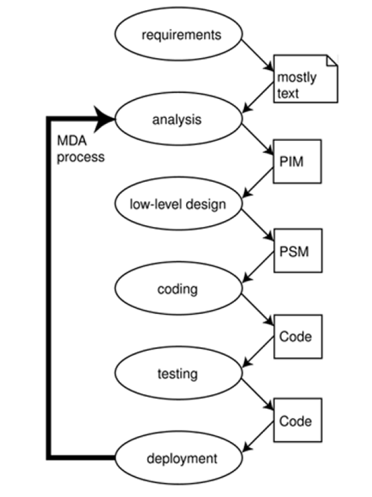
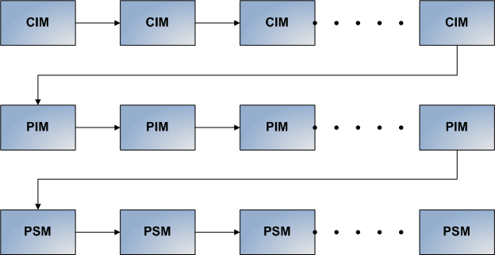

The Model Driven Architecture (MDA) is a framework for software development defined by the ObjectManagement Group (OMG). Key to MDA is the importance of models in the software development process. WithinMDA the software development process is driven by the activity of modeling your software system.
C'est Quoi un model
une description ou spécification du système et de son environnement dans un but spécifique, qui peut être présentée graphiquement et textuellement.
Les modèles fournissent des abstractions d'un système physique qui permettent aux ingénieurs de raisonner sur ce système en ignorant les détails étrangers tout en se concentrant sur ceux pertinents
model driven approach
se concentre sur les modèles pour travailler avec les systèmes, y compris la conception, la construction, le déploiement, l'exploitation, la maintenance et la modification.
Viewpoint
C'est une technique d'abstraction utilisant un ensemble de concepts architecturaux et de règles structurantes, afin de se concentrer sur des problématiques au sein de ce système.
MDA viewpoints
Computation Independent Viewpoint
Se concentre sur l'environnement et les exigences du système.
Plateform Independent Viewpoint
Se concentre sur le fonctionnement d'un système tout en cachant les détails nécessaires pour une plate-forme particulière.
Plateform Specific Viewpoint
Ajoute des éléments spécifiques a une plateforme
MDA models
Computation Independent Models
le modéle selon la vue Computation Independent Viewpoint , c’est-à-dire sans les détails de la structure du systéme. Il correspond aussi au modéle du domaine
Plateform Independent Models
C'est une vue d'un système PIV. Un PIM présente un degré spécifié d'indépendance de plate-forme afin de pouvoir être utilisé avec un certain nombre de plates-formes différentes de type similaire
Plateform Specific Models
C'est une vue d'un système PSV. Un PSM combine les spécifications du PIM avec les détails qui spécifient comment ce système utilise un type particulier de plateforme. C'est un PSM plus détailés
MDA Cycle de vie

Evolution tres rapide des nouvelles technologies
Remise en cause des infrastructure
Remise en cause des besoins
Avantage
Productivité
Intérobérabilité
Réutilisabilité
Documentation
Inconvinion
Métrise de métier
Maindeuvre rare
N'est pas adopter au différent type de système
MDA Usage
Processus de base
Le principal défi est la transformation entre les différents modèles.
processus pour les systèmes complexes

Il n'y a plus de séparation stricte entre les différentes couches.